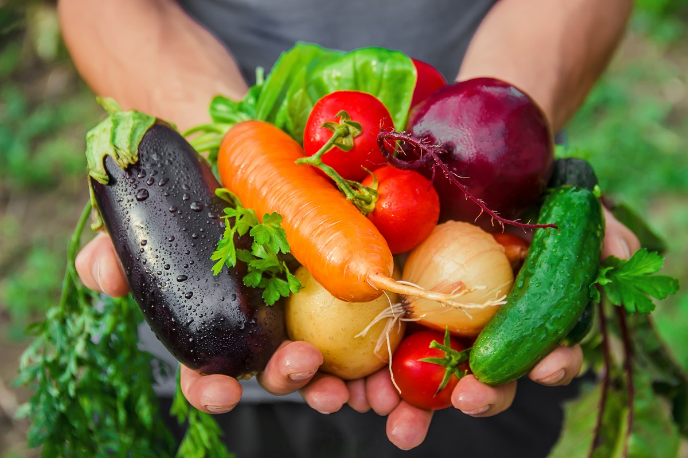

A Few Things I Learned Along the Way
- Choose an area that gets full sun and water plants frequently. New plants need plenty of sun and water especially in the beginning, so that they can establish a strong root sytem to sustain a harvest later in the season. Picking a Place for Your Garden
- Start small. I suggest picking 4-6 plants to start. Read the back of the sead packet or read the tag to estimate how much space you will need for each plant. This will help you determine how many plants you will have space for. How to Arrange Your Garden
- Check on your plants/water plants daily. Personally, I got into a routine of getting out in the morning to water my plants before of after breakfast, and then on the weekends I would take a bit of extra time to pull weeds etc. If you make a habit of regularly checking on your plants, you can catch any pests or weeds before they cause too much damage or before they significantly affect you crop.
- Harvest your vegetables as soon as they are ripe. I made the mistake of not harvesting some of my vegetables soon enough. This results in them becoming overripe and not tasting as good and in some cases, having to be thrown out. Don't let your hard work go to waste! When to Harvest Your Veggies
Enjoy the Process
Personally, my gardening experience has been rewarding. I enjoyed every part of it, from the preparation of the soil to harvesting produce. While it definitely requires investment on the front end, it also does not need to become overwhelming. It is totally possible to keep it simple. I reccomend starting small, and learning as you go. While it's helpful to have a few resources to refer to in the beginning, I have found that it is best to just dig in(literally) and trust the process. I already have a bit more knowledge of what works and what doesn't in my space and have some ways that I plan to approach things differently next time. I hope my journey inspires you to try your hand at it as well. Best of luck!
